<mat-toolbar color="primary">
    <div></div>
    <div *ngFor="let item of menuItems">
        <a mat-button [routerLink]="[item[1]]" [routerLinkActive]="['mat-flat-button','mat-accent']"> {{item[0]}} </a>
    </div>
    <span class="flexExpand"></span>
    <button mat-icon-button (click)="this.logoutAction()"><mat-icon class="material-icons">exit_to_app</mat-icon></button>
    <a mat-icon-button [routerLink]="'/settings'" [routerLinkActive]="['mat-flat-button','mat-accent']"><mat-icon>settings</mat-icon></a>
</mat-toolbar>